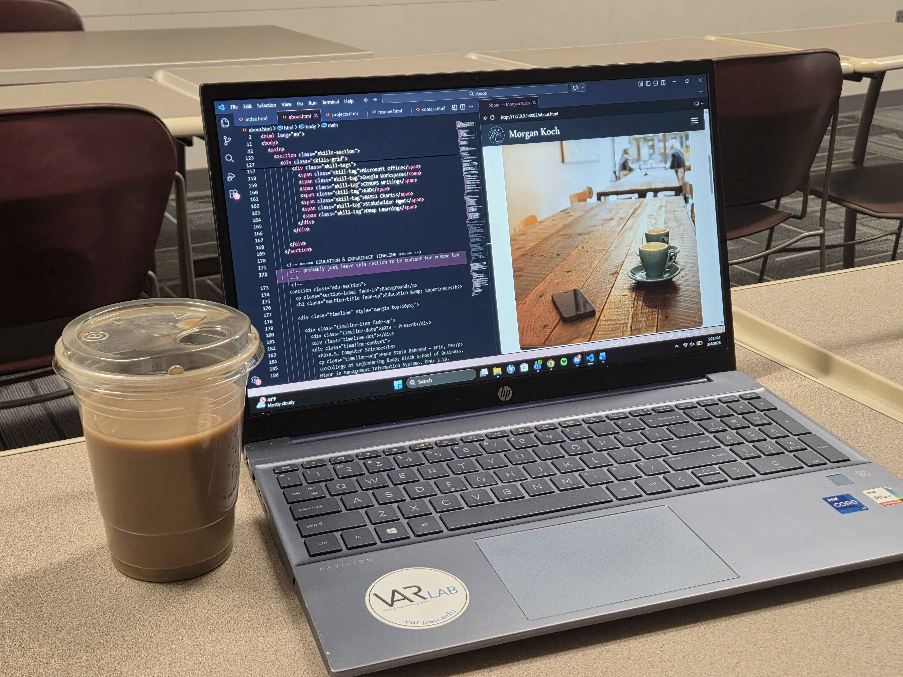

Web · Design · Frontend
Personal
ePortfolio
Designed and built this portfolio site entirely from scratch — custom brand identity, responsive layout, dark/light mode, and thoughtful JavaScript interactions.

Overview
Built From the Ground Up
This ePortfolio started as a course project for MIS 387 and evolved into a fully custom personal site that I continue to develop and refine. Rather than reaching for a template, I built everything from scratch — defining the visual language, writing every line of HTML, CSS, and JavaScript, and thinking through the user experience at every step.
The result is a site that genuinely represents my voice: editorial display typography, a warm neutral palette with gold accents, and interactions that feel intentional rather than decorative.
Design System
Brand & Visual Language
Before writing a line of code I established a cohesive brand identity — the MK monogram logo, a warm neutral color palette, and Cormorant Display paired with Montserrat for an editorial feel with modern readability. CSS custom properties power the entire design system, keeping colors, spacing, and typography consistent and easy to update.
The site supports both light and dark modes, toggled with a single button — a smooth transition achieved entirely through CSS variable swapping with no JavaScript layout recalculations needed.
Features & Technical Details
What's Under the Hood
- Fully responsive layout built with CSS Grid and Flexbox — adapts cleanly from mobile to widescreen without a single media query hack.
- Scroll-triggered fade-up and fade-in animations using the Intersection Observer API for smooth, performant entrance effects.
- Dark/light mode toggle that persists via
localStorageand transitions all colors with a single CSS variable swap. - Contact modal built with vanilla JS — opens via trigger buttons anywhere on the site, with overlay dismissal and clean animation.
- Project filter tabs on the Projects page using dataset attributes for category matching — no external libraries.
- Clip-path decorative shapes on hero images and section dividers for visual depth without additional markup.
- Custom CSS design tokens for a consistent, maintainable visual system that scales easily as pages are added.
Process & Reflection
Lessons Learned
Building this site pushed me to think seriously about design decisions I might otherwise delegate — typography scale, whitespace rhythm, and how visual hierarchy guides a visitor's attention. Every section had to earn its place.
The project is ongoing. Next steps include migrating to WordPress, replacing placeholder images with final photography, and continuing to expand project detail pages as work evolves.
Up Next